2026-11-11
VOL 407
读者，早。
同样叫“AI项目”，可能已经包含更多种任务。OpenAI与Upwork的新研究发现，这类项目预算更高、工时更多，标注时薪与其他项目却相近。平台上某类工作的占比下降，也不能直接换算成全社会少了多少岗位。项目的边界、统计的分母，比一个醒目的增幅更能解释接单者正在经历什么。
产品与模型方面，ChatGPT给商家增加认领信息和经营专属代理的入口，Carbon扩大付费访问；OpenRouter的三项新记录则只是当天新增的调用路线，其中两项明确属于衍生模型。这些变化可以逐项使用和比较，不必都包装成基础模型首发。医疗数据代理的预览与三笔企业融资另有各自的使用条件，融资额也不能替代效果验证。

OpenAI推出Businesses in ChatGPT测试版，符合条件的商家可通过Business Hub认领企业、更新信息与产品价格库存，并查看达到隐私门槛后的汇总提及、点击和发现主题；公司称不向商家分享用户原始对话或Business Agent聊天。专属Business Agents先面向美国合资格电商与在线服务企业。用户自主进入清楚标记、与原始聊天分开的商家会话；代理还可作为标明赞助的广告目的地，不能混同ChatGPT的独立回答。
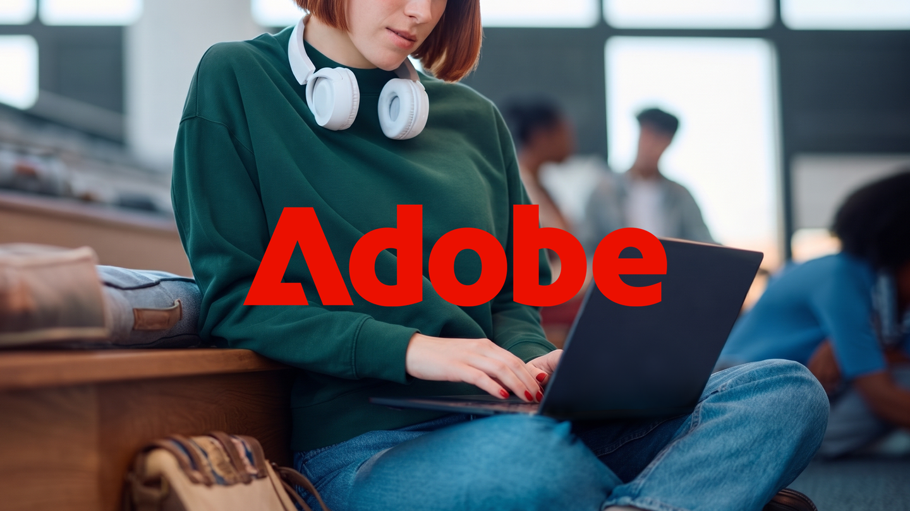
Google与Adobe宣布扩大合作，计划在Drive和Gmail中增加通往Acrobat的文档操作，把Adobe创作与生产力工具进一步接入Gemini、Gemini Enterprise和搜索AI Mode。双方还将探索Acrobat工作流、企业客户体验协作，以及DeepMind与Photoshop的近实时编辑方向。公告包含后续推出及探索中的项目，不能理解为全部功能当天已向所有账号开放，也未统一给出免费使用承诺。
Google公布Gemini Intelligence的新一轮设备与功能安排：Pixel 10系列部分机型通过Pixel Drop获得功能，Motorola signature 27将在美国11月19日开放预订，不能写成当天开售。任务自动化扩展到英国、印度与日本，Create My Widget计划未来几周推出，可结合Gmail、日历和搜索信息。Rambler输入与设备协助也各有支持机型，部分能力涉及Android 17、语言、地区、订阅或年龄条件，并非全体Android手机同时获得。
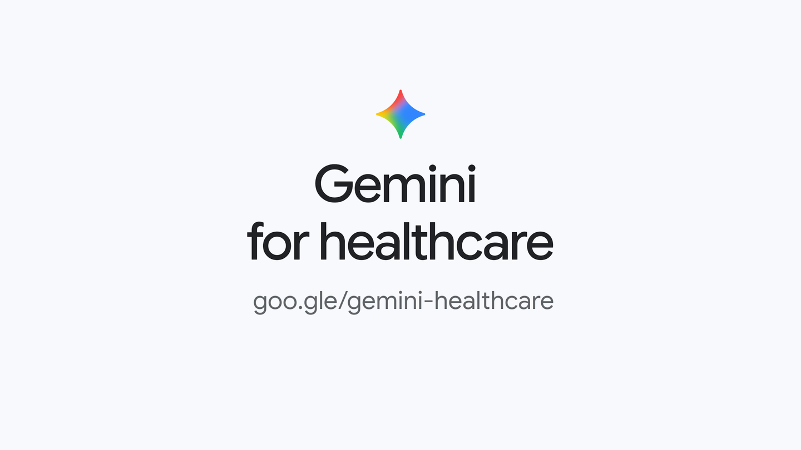
Google Cloud公布Gemini for healthcare预览，介绍与HCA Healthcare、Highmark Health及Northwell Health等机构的合作。方案尝试连接电子病历、账单、医疗指南等资料，支持记录整理与事前授权等多步骤工作，强调受控访问和专业人员监督。本条是产品预览及合作方应用说明，没有据此证明临床疗效、诊断准确率或所有医院均已上线；行政资料处理也不能直接等同医生诊疗。
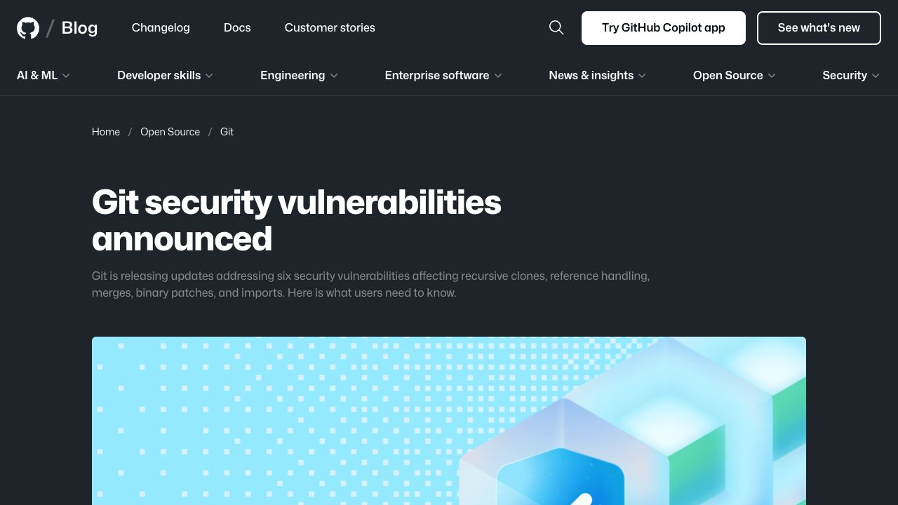
Git发布2.56.1，并为2.55至2.50的维护系列提供对应修补版本，处理恶意仓库递归克隆中的代码执行、引用路径验证，以及签名移除、二进制补丁、大型合并和fast-import相关问题。GitHub称云端服务已部署修复，Enterprise Server补丁见3.19.15、3.20.11、3.21.9与3.22.4。公告同时提醒更新内置Git的应用和自动化环境；暂时只处理可信输入不能代替安装修复，也不能由漏洞公告断言本机已遭攻击。

Google扩大Gemini 4 Carbon可用范围，面向付费开发者与企业提供API，并向Google AI Ultra订阅者铺开Gemini应用、AI Mode和Antigravity入口。这是两周前先向Fairwind网络防御项目推出后的访问扩展，基础事件较早，增强网络安全能力仍有单独申请条件。公共访问型号的优惠价为每百万输入tokens两美元、输出十美元，11月30日优惠期结束后为四与二十美元。厂商基准及演示不代表所有任务都达到同等收益，科研免费名额也受资格、容量与遴选限制。
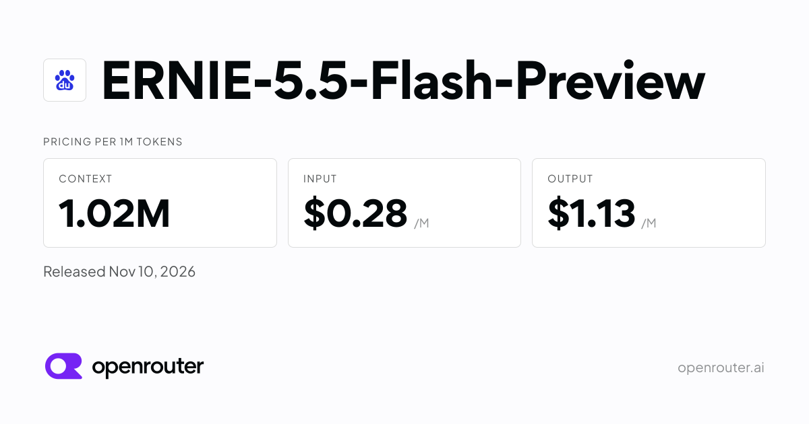
OpenRouter当天新增Baidu ERNIE 5.5 Flash Preview条目，并显示由Baidu提供的可用端点。平台列出1,024,000 tokens上下文，每百万输入tokens标价0.28美元、输出1.13美元。这条记录证明的是本窗口内平台新增接入，不是百度基础模型首发时间；Preview性质与实际账号限制仍须按服务说明确认。本次未核验到该Preview对应的可下载权重，不能与较早的ERNIE 5.5 Flash Base仓库混为一谈。
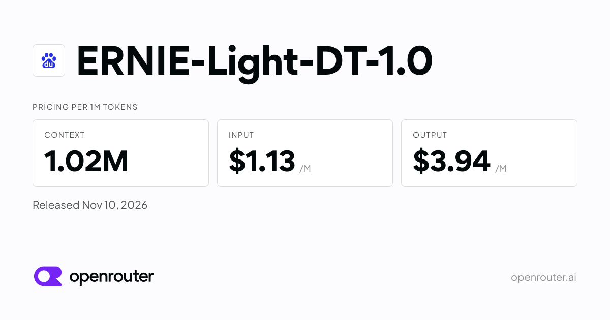
OpenRouter新增ERNIE-Light-DT 1.0国际调用路由，列出Baidu端点、1,024,000 tokens上下文，以及每百万输入tokens1.13美元、输出3.94美元。平台说明它基于开源GLM，并介绍Baidu Sparse Attention等调整；这些属于平台对衍生模型的说明，不是独立测试结论。当天可核验事件为新增路由，不能改写成全新独立基础模型首发，也未由这份服务页证实对应权重已开放下载。
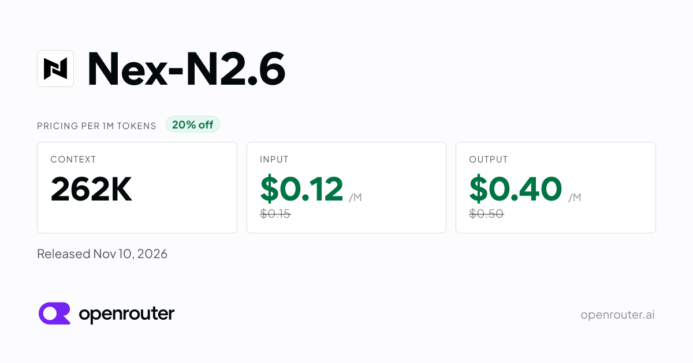
NexAGI的Nex-N2.6当天加入OpenRouter，平台列出文本和图像输入、文本输出，262,144 tokens上下文；每百万输入tokens0.12美元、输出0.40美元。端点由NexAGI提供，标记FP8。按平台说明，这是基于GLM-5.3-Flash的衍生版本，参数与能力描述属于作者或平台自报；当天新增的是服务入口，不等于其底座当天首发。本次未核验到公开权重下载，低价API也不构成开放权重证明。
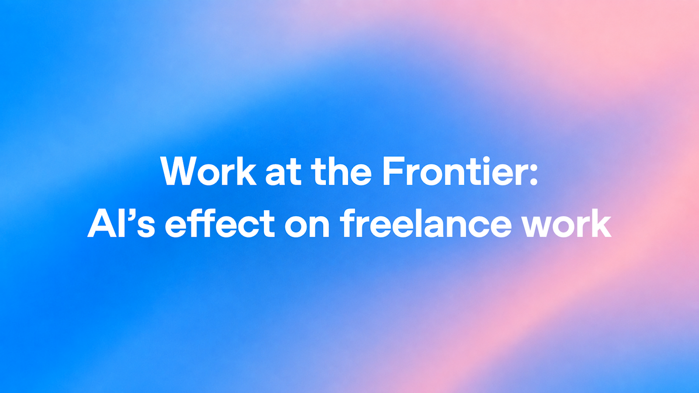
OpenAI与Upwork发表新研究，以既有平台资料观察自由职业需求。2025上半年至2026上半年，网页开发在Upwork发帖中的占比减少1.98个百分点，视频动画增加1.38个百分点；占比不是岗位绝对数，更不能直接推及全部劳动力市场。AI相关发帖的任务组合从2023年初至2025年末更为多样，研究所用多样性指标上升45%。这类项目固定价预算较高、涉及工时较多，但标注时薪与其他项目相近。观察性比较不能单独证明AI导致变化，也未证明自由职业者的实际到手收入普遍提高。
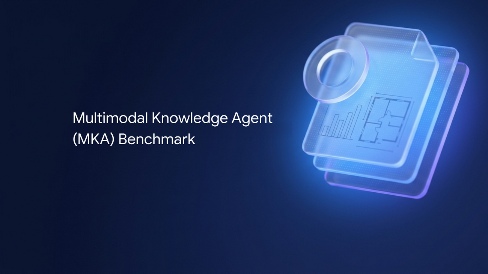
Google与Artificial Analysis介绍Multimodal Knowledge Agent基准，以200项私有任务覆盖十个行业、83种职业，专业人员通常须三至八小时完成，涉及文档、图表与其他多模态材料。评估在相同Stirrup框架、工具和预算下进行，每项约七十个二元检查点，事实与设计权重约为75%和25%。非Google模型担任自动评分者，与专家评分一致率为96%，不是任务正确率。另行公开的是十个示例，完整200题保留私有以减少污染。
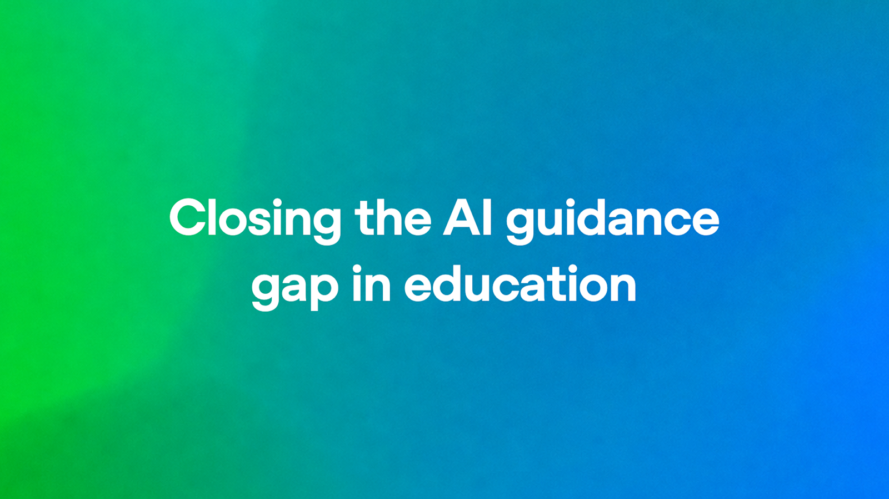
OpenAI发表教育指导报告，援引ThinkYoung新研究：受访学生中79%曾用AI做作业，47%曾获如何使用的指导。文章介绍欧洲、中东与非洲部分教育合作项目、教师应用与早期经验。受访样本不能直接当作全球学生普查，教师自报省时与采用率也不是学生独立思考或长期学习成绩改善的因果证据。本条是当天新研究与分析，文中涉及的部分教育项目基础事件较早。
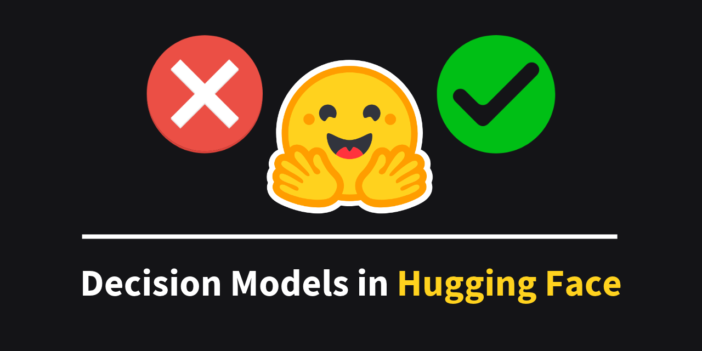
Hugging Face发表Decision Models分析与工具指南，介绍以状态、问题和允许的答案为输入，直接输出选项及概率的决策方式，而非生成一段自由文本。文章展示choice、score等有限决策接口，以及Transformers、llama.cpp与Hub的接入路径，举例使用既有GEV-26B-Decide等模型。本条是当天新发布的分析，基础模型较早；文章公开时间以官方博客仓库当天合并记录交叉核验，不能把页面零点占位时间当作精确发布时间。输出概率本身不保证正确或已校准。
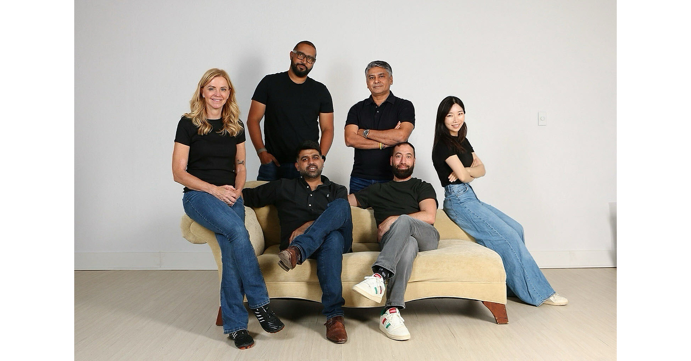
原名QuilrAI的WhiteMatter宣布完成两千万美元A轮，Blumberg Capital领投，Crew Capital及Sprout & Oak继续参与。公司介绍覆盖终端、浏览器、SaaS、云与代码的代理管理平台，并可为代理配置Guardian执行策略检查。公司自报现管理225万个代理，半年营收增长至五倍、净收入留存率约200%；这些经营数字未经本次独立审计，代理数量也不等于真实员工数或已证明的安全效果。新资金用于研发、市场扩展和管理团队建设。
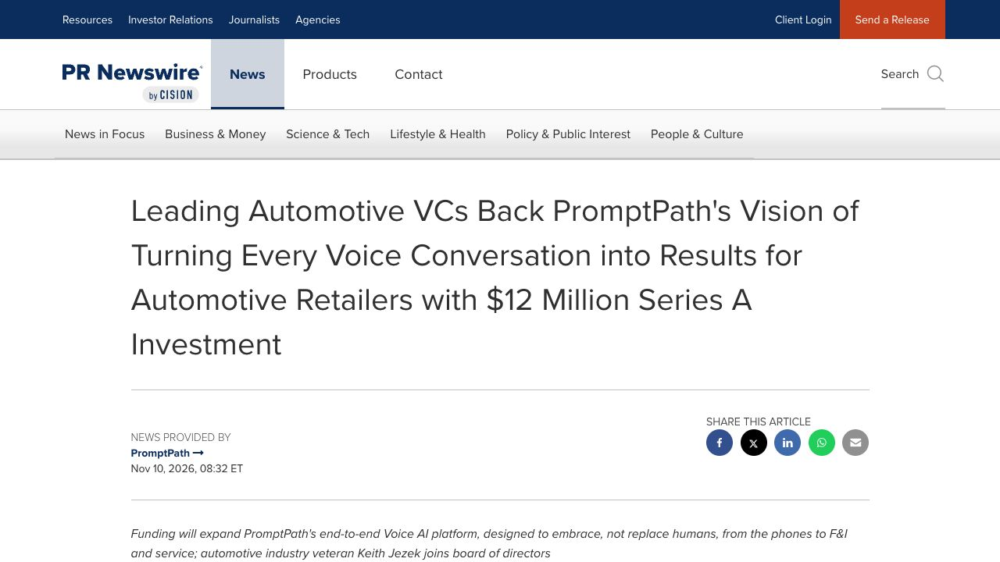
汽车经销商对话辅助公司PromptPath宣布一千二百万美元A轮，FM Capital与Armory Square Ventures领投，Automotive Ventures、Holman Ventures及车商投资方参与，汽车科技高管Keith Jezek加入董事会。平台提供实时对话提示、客户背景与教练式反馈，覆盖销售、金融保险及售后沟通，并计划扩展产品。公司将其定位为辅助员工而非替代人，这属于产品方立场，不能当作已经验证的就业结果；公告未给出可统一比较的营收与留存数据。
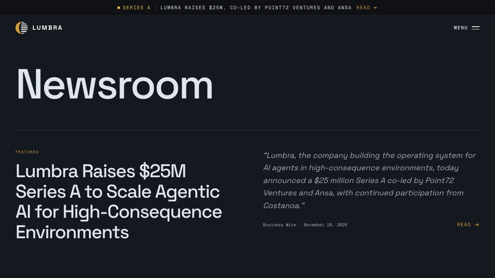
Lumbra宣布两千五百万美元A轮，由Point72 Ventures与Ansa共同领投，Costanoa继续参与。公司称资金主要用于工程与部署团队，将已服务政府敏感环境的代理平台拓展至金融、医疗和法律等商业领域。其LumbraOS组合代理编排、可追溯知识图谱和持续评估；写回业务记录前由领域专家验证。现有部署与可靠性描述属于公司自报，不能由融资和政府客户背景直接推出各行业效果。金额及投资方经公司新闻室与Business Wire当日原始公告的授权转载交叉核对。
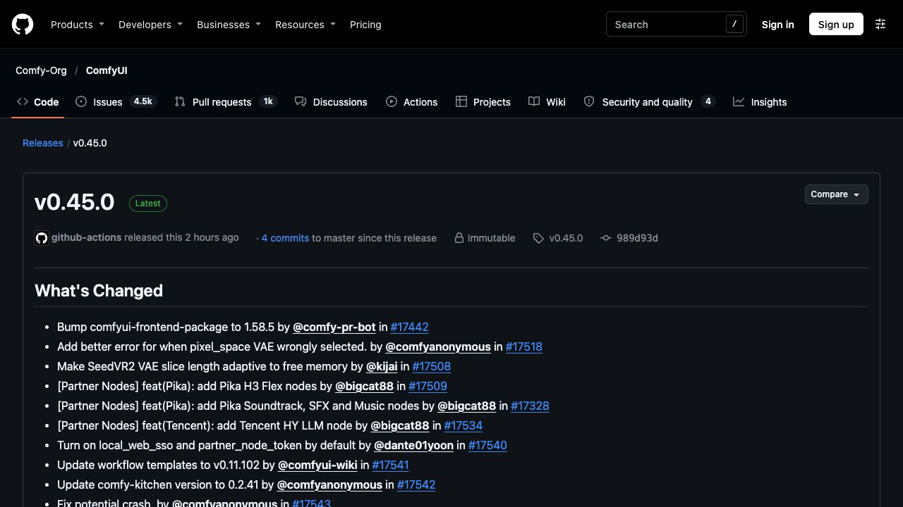
ComfyUI发布v0.45.0，加入Pika H3 Flex及声音音乐节点、Tencent HY LLM、Kling 4.0 Flash等合作伙伴节点，并更新图像与视频接入；工作流模板升至0.11.105。维护部分包括SeedVR2 VAE按空闲显存自适应切片、图像视频处理及若干崩溃修复。合作节点调用外部服务时仍取决于相应账号、额度和费用，界面可见不表示底层模型权重开放或API免费。升级使用的是当天正式Release，不能用节点更新改写旧模型的首发日期。